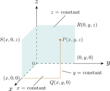
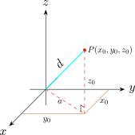

4.1 Three Dimensional Coordinate System
The Cartesian coordinates of a point \(P(x,y,z)\) in space may be read from the coordinate axes by passing through \(P\) perpendicular to each axis. The three coordinate planes \(x = 0, \hspace {0.3cm} y = 0 \) and \(z = 0\) divide the spaces into eight cells called octants. The octant in which all three coordinates are positive is called the first octant but there is no conversional numbering of the remaining seven octants. The figure below shows the first octant.

The point \(Q(x,y,0)\) is the projection of \(P(x,y,z)\) on the \(xy - \) plane. Similarly, \(R(0,y,z)\) and \(S(x,0,z)\) as projections of \(P\) on the \(yz - \) and \(xz - \) planes respectively. The Cartesian product \(\mathbb {R}\times \mathbb {R}\times \mathbb {R} = \{(x,y,z): x,y,z \in \mathbb {R}\}\) is the set of all ordered triples of real numbers and is denoted by \(\mathbb {R}^3\). This is called the three dimensional co ordinate system. In this system an equation in \(x,y,z\) represents a surface in \(\mathbb {R}^3\).
- 1.
- What surfaces in \(\mathbb {R}^3\) are represented by the following equations?
- (a)
- \( z = 3\)
- (b)
- \( y = 5\)
- 2.
- Describe and sketch the surface in \(\mathbb {R}^3\) represented by the equation \(y = x\).
Solution.
Part 1
- 1.
- The equation \(z = 3\) represents the set of \(\{(x,y,z): z = 3\}\) which is the set of all points in \(\mathbb {R}^3\) whose \(z- \)coordinates is 3. This is the horizontal plane that is parallel to the \(xy - \) plane and three units above it.
- 2.
- The equation \(y = 5\) represents the set of all points in \(\mathbb {R}^3\) whose \(y - \) co ordinate is 5. This is the vertical plane parallel the \(xz - \) plane and five units to the right of it.
In general, if \(K\) is a constant, then \(x = K\) represents a plane parallel to the \(yz - \) plane, \(y = K\) is a plane parallel to the \(xz - \) plane, \(z = K\) is a plane parallel to the \(xy - \) plane.
Part 2
The equation represents the set of all points in \(\mathbb {R}^3\) whose \(x - \) and \(y - \) coordinates are equal, that is \(\{(x,y,z): x \in \mathbb {R}, z\in \mathbb {R}\}\). This is a vertical plane that intersects the \(xy - \) plane in line \(y = x , z = 0\).
The distance between the origin and the point \(P(x_0,y_0,z_0)\) is given by: \[d = \sqrt {x_0^2 + y_0^2 + z_0^2}\]
Proof.

From the diagram \(d^2 = z_0^2 + a^2\) but \(a^2 = x_0^2 + y_0^2\) \begin {align*} \therefore \hspace {0.5cm} d^2 & = x_0^2 + y_0^2 + z_0^2\\ \implies \hspace {0.5cm} d & = \sqrt {x_0^2 + y_0^2 + z_0^2}\\ \end {align*}
Similarly, the distance between two points \(P_1(x_1,y_1,z_1)\) and \(P_2(x_2,y_2,z_2)\) is given by \[d = \sqrt {(x_2 - x_1)^2 + (y_2 - y_1)^2 + (z_2 - z_1)^2 }\] □
Questions on this section
Stuck on something here? Ask below and it stays attached to this topic.